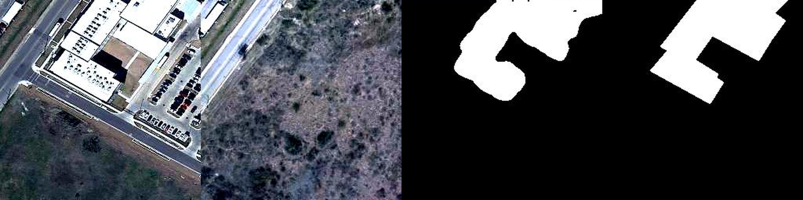
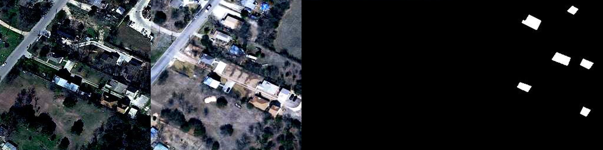

RSI-EdgeVision · 参赛参考资料
07 / 实验结果
实验结果
全部指标在 RDK X5 板端以 int8 量化模型实测
图 3 板端量化模型精度指标
量化前后精度对比
| 对比项 | 浮点模型（CPU） | 板端 int8 模型 | 结论 |
|---|
| 变化像素占比 |
0.1885 |
— |
浮点自检的预测占比（0.1885）与真实标签占比（0.2012）高度接近，说明模型与预处理正确；量化后板端 F1 仍达 0.8648，说明量化基本无损。 |
| 真实标签占比 | 0.2012 | — |
| F1 | — | 0.8648 | 端侧精度对标主流方法 |
| 模型体积 | 10.2 MB（.pth） | 3.2 MB（.bin） | 压缩约 68%，满足 4 GB 板卡部署 |
一句话结论：本作品做到了"压缩 68% 体积，精度基本不掉"——
这既是算法设计为量化预留空间的结果，也是真实数据校准策略的直接收益。
7
RSI-EdgeVision · 参赛参考资料
08 / 可视化结果
检测效果可视化
左起：前时相 → 后时相 → 人工标注真值 → 模型预测
典型正确案例：建筑区整体变化
T1 前时相T2 后时相GT 真值Pred 预测

图 4 前时相为密集建筑与绿地，后时相建筑已拆除变为裸地；模型将整片变化区域完整检出，边界与真值高度吻合（预测变化占比 0.1783 vs 真值 0.1897）
典型误报案例：小目标误判
T1 前时相T2 后时相GT 真值Pred 预测

图 5 真值为无变化区域，模型在若干位置产生了零散的小块误报（预测 0.0263 vs 真值 0）。误报面积小、分布零散，可通过置信度阈值与后处理连通域过滤进一步抑制
误差分析结论：模型的主要误差来自细小块状目标的误报，而非大面积漏检。
这类误差对变化面积的统计影响有限，且可通过阈值调节与形态学后处理有效抑制——
这为后续在板端加入自适应阈值与连通域过滤提供了明确方向。
8